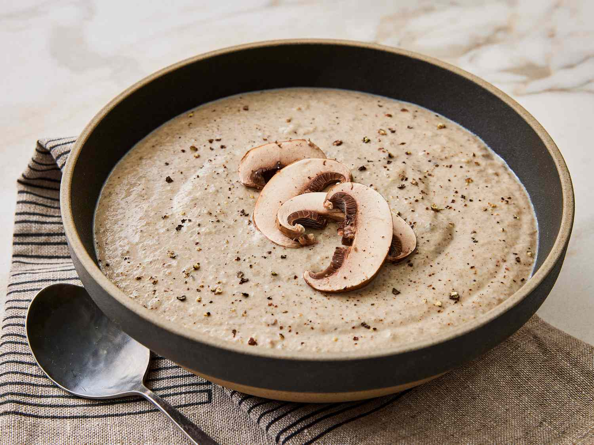

Home
Mushroom Soup

Description
A warm and comforting mushroom soup made with fresh mushrooms, garlic, and herbs, perfect for any season.
Prep Time: 10 minutes
Cook Time: 30 minutes
Servings: 4
Ingredients
- 1 lb fresh mushrooms, sliced
- 1 small onion, chopped
- 2 cloves garlic, minced
- 4 cups vegetable broth
- 1 cup heavy cream
- 2 tbsp butter
- 2 tbsp olive oil
- 1 tsp dried thyme
- Salt and pepper to taste
- Fresh parsley for garnish (optional)
Instructions
- In a large pot, heat olive oil and butter over medium heat. Add chopped onion and cook until translucent, about 5 minutes.
- Add minced garlic and cook for another minute until fragrant.
- Add sliced mushrooms and dried thyme. Cook until mushrooms are tender and have released their juices, about 10 minutes.
- Pour in vegetable broth and bring to a boil. Reduce heat and let simmer for 15 minutes.
- Using an immersion blender, blend the soup until smooth. Alternatively, you can transfer the soup in batches to a blender and blend until smooth.
- Stir in heavy cream and season with salt and pepper to taste. Heat through but do not boil.
- Ladle soup into bowls and garnish with fresh parsley if desired. Serve hot and enjoy!